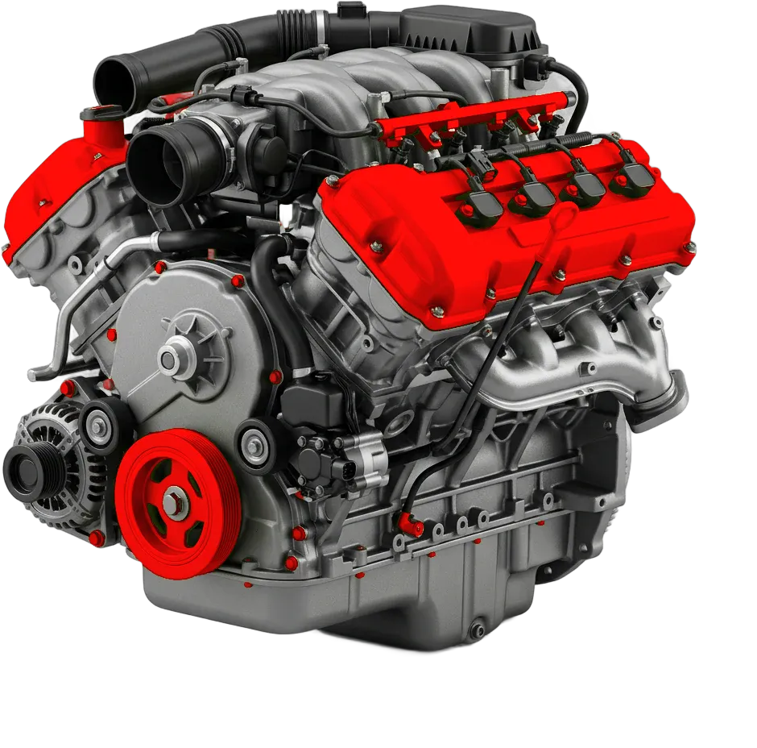
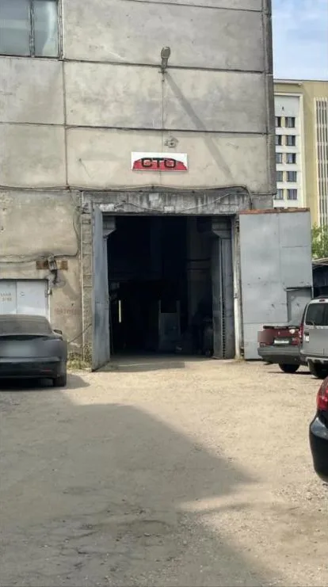
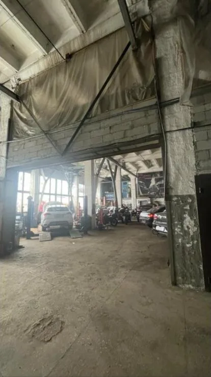
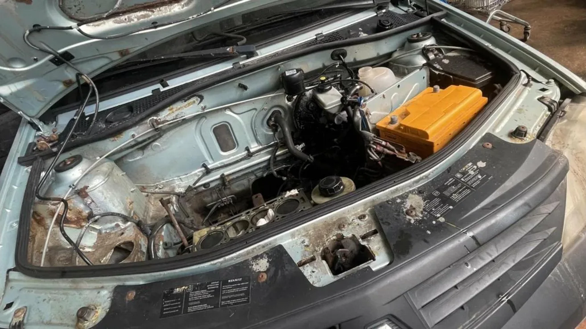
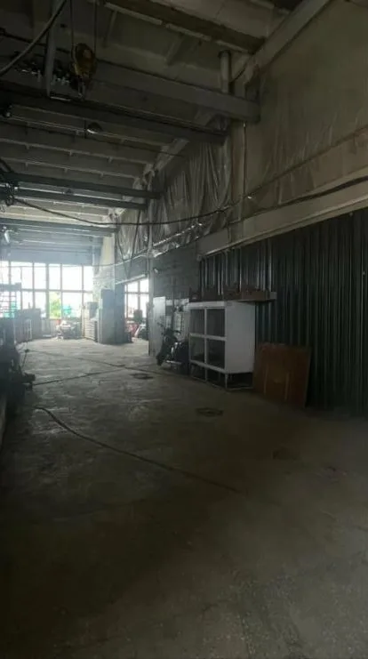

Ю
Юлия С.11 августа
Постоянно обслуживает тут Mini Cooper, в последний раз — масло и колодки. Мастера знают особенности Mini, расходники были в наличии: оригинал или хороший аналог на выбор.
Диагностика подвески — бесплатно при ремонте
Турбины, ГБЦ, ГРМ и капремонт, а ещё ходовая, КПП и электрика. Минск, Октябрьская ул., 16/4.

Суббота и воскресенье — выходные
Платите наличными или безналично
Больше 50 работ с ценой — в прайсе ниже
Цены — «от». Точную сумму скажем после осмотра машины
Записаться



Постоянно обслуживает тут Mini Cooper, в последний раз — масло и колодки. Мастера знают особенности Mini, расходники были в наличии: оригинал или хороший аналог на выбор.
Чинила кондиционер. Всё подробно объяснили, заказали деталь и быстро поставили. Вышло заметно дешевле, чем у официального дилера.
Обслуживает здесь BMW и Mercedes. Работают без задержек, а бюджет и доп. расходы всегда согласуют заранее, всё объяснят и посоветуют.
Ответственные ребята: покажут и объяснят, что сделали. Если нужно срочно — пойдут навстречу по срокам, без потери качества.
Приезжает не в первый раз и очень довольна мастерами: быстро, чётко, по делу и с подходом к каждому.
Обслуживает свою машину и советует сервис друзьям. Поздравил с переездом: раньше сервис был на Софьи Ковалевской.
Опишите, что не так с машиной
Работаем с понедельника по пятницу
Октябрьская ул., 16/4